lightningPalm v01
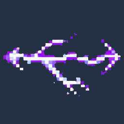
Approved by the user via Claude relay killua-skills #2: lightningPalm v01, palmCrackle v01, palmShock v02, shockCrawl v02, godspeedBurst v01, godspeedAura v03 and godspeedStreak v03 as drawn. Superseded versioned attempts are filed under _rejected/. Part A effects A1–A7. Review each saved source candidate and the packed 256×256 game-scale loop. Raw files are preserved exactly; the gameplay previews use the branch candidate pack.
godspeedAura_v03 still clips in the candidate pack after its 3/3 calls. Source canvases have near-magenta rather than exact #FF00FF corners and very high source color counts; these are disclosed for technical review. Packer previews show keyed and quantized output. Other unrelated missing-effect warnings are from sparse checkout inputs.
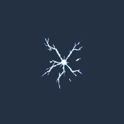
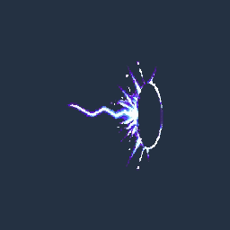
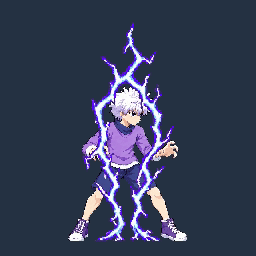
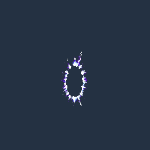
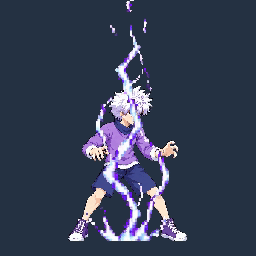
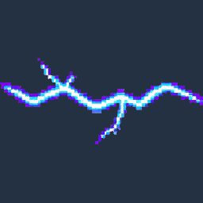
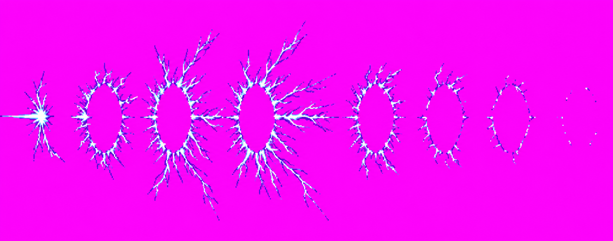
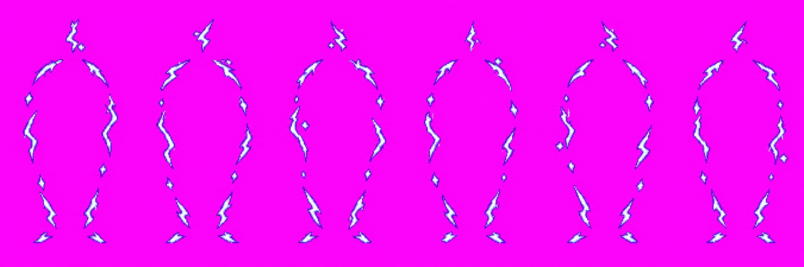
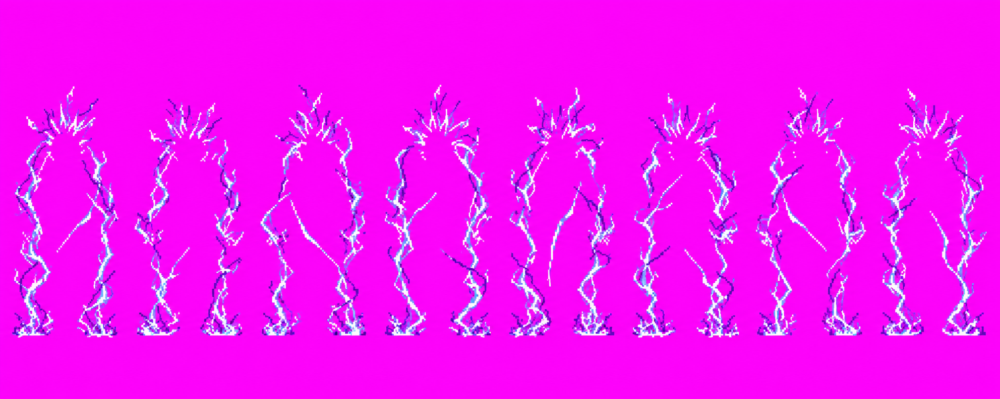
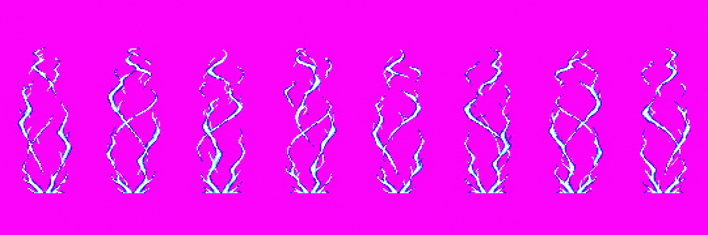
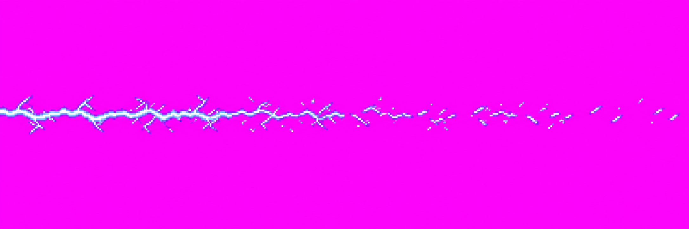
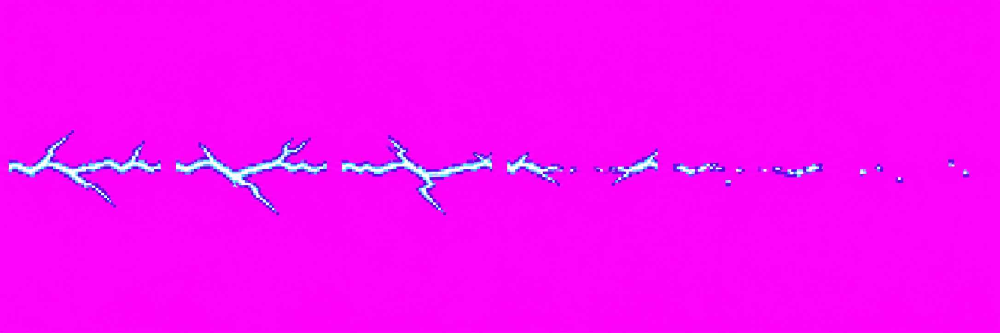
Identity: the candidates read as sparse angular white/cyan electricity with violet rims, giving Killua a distinct filament language. Proportions and pose: not applicable to effects. Technical: six effects pass expected frame counts; godspeedAura remains clipped, while source background/palette differ from the strict brief and require a decision on the disclosed hold.
Review inventory: attempts and source hashes. Compare Chidori style reference:
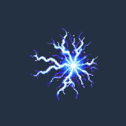
. These are review candidates only; no image is approved.